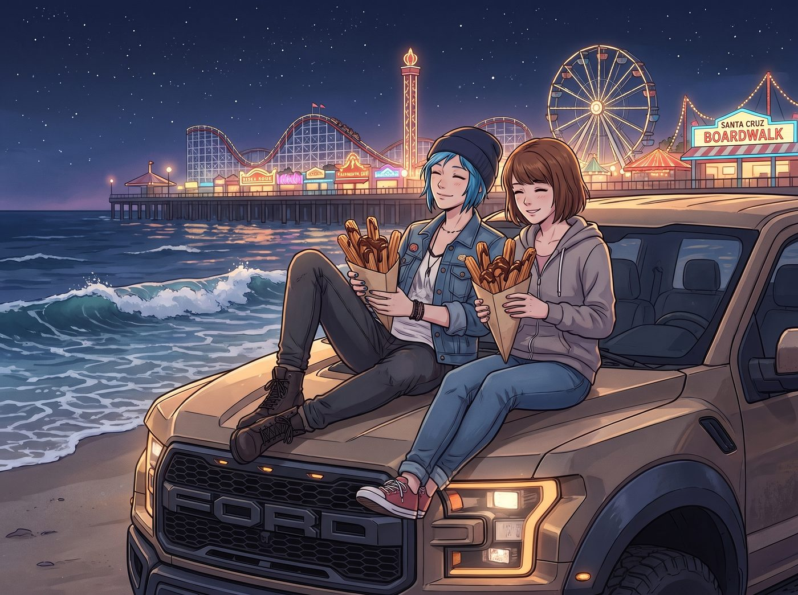
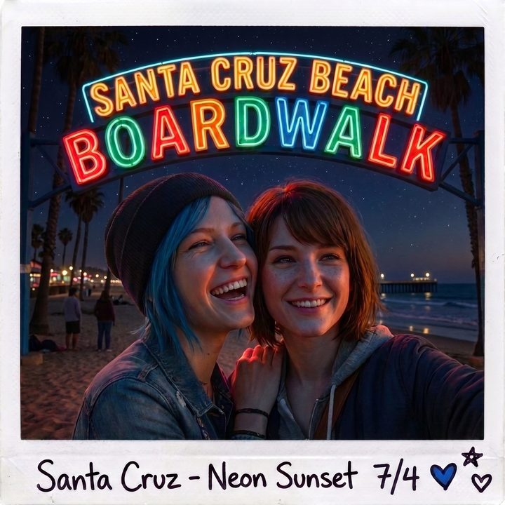

語義盲區


在律師陪同下，飛快地辦完那些屈辱的手續後，Chloe 滿臉陰沉地走出加州公路巡警中隊的大門。
Max 把那個裝著一萬多美元現鈔的帆布包扔回猛禽皮卡的後座，然後接過警官遞還的手機，正準備掛斷還在通話中的視訊。
「等等，Max。」
Chloe 一把按住 Max 的手，將手機鏡頭對準自己。她深吸了一口氣，眼神裡透著一種「徹底放棄治療」的妥協，但同時也帶著不容越界的龐克底線。
「好了，實習生。妳贏了。演算法贏了。這見鬼的資本主義基建贏了。」Chloe 對著螢幕裡的 Lily 咬牙切齒地說，「妳可以繼續用妳那些什麼狗屁發票、收費站和胎壓數據來確認我們是不是還活著。但是——」
Chloe 豎起一根手指，語氣變得無比認真，甚至帶著一絲罕見的溫柔與警告：
「接下來的四十八小時，我和 Max 要去聖塔克魯茲（Santa Cruz）。我們要去海灘，去坐摩天輪，去吃垃圾食物。
我只有一個條件：不准視姦。
不准黑進沿街的監視器看我們，不准調用我們的麥克風，不准用任何方式『聽』或者『看』我們在幹嘛。老娘需要一點隱私，我們需要一點……浪漫時刻。懂嗎？」
螢幕那頭，Lily 微微一愣。
她看著 Chloe 那張雖然沾著灰塵、卻寫滿了對身邊女孩保護慾的臉，眼神逐漸變得柔和。
「我明白了，Chloe 學姐。我向您保證，我會啟動『行政語義盲區（Semantic Blindspot）』協議。」
Lily 推了推眼鏡，開始用她那套令人頭皮發麻的術語來解釋她的「不偷窺」承諾：
「從現在起，我不會調閱任何包含音訊或視訊的直接數據。我將僅通過監測聖塔克魯茲地區的宏觀物理基建——比如您們所在街區的市政水壓波動、以及區域性 Wi-Fi 節點的基礎 Ping 值來確保您們的生命體徵。
也就是說，只要那片區域的電網沒有崩潰，水管還在供水，在我的系統裡，您們就是兩個安全的『匿名數據點』。我對您們的生物學與情感交流，保持絕對的技術與法理失明。」
「……雖然聽起來還是很變態，但成交。」Chloe 滿意地切斷了通話。
【下一站：聖塔克魯茲的霓虹盲區】
兩個小時後，猛禽皮卡駛入了聖塔克魯茲（Santa Cruz）。
這是一座充滿復古氣息的海濱小城。由於疫情的影響，著名的海濱遊樂園（Beach Boardwalk）雖然亮著霓虹燈，但空無一人。
沒有了「隨時會被當成毒販逮捕」的心理壓力，也沒有了被人盯著的窒息感，兩人終於徹底放鬆了下來。
她們買了兩大份淋滿巧克力醬的吉拿棒（Churros），偷偷翻過遊樂園邊緣的矮牆，來到了沙灘上。
Chloe 將皮卡車直接開到了離海浪最近的沙灘邊界。兩人爬上引擎蓋，並肩躺著，聽著太平洋的海浪聲，看著遠處遊樂園裡閃爍的、猶如上個世紀般的復古霓虹燈。
「所以……」Chloe 咬了一口吉拿棒，轉過頭看著 Max，「妳覺得那個小書呆子現在真的沒在看我們嗎？」
「她答應了。」Max 笑了笑，迎著海風，將頭輕輕靠在 Chloe 的肩膀上，「我相信她。Lily 雖然是個黑魔法師，但她是個有契約精神的黑魔法師。」
海風吹拂著她們的頭髮。沒有時間回溯的重擔，沒有世界末日的威脅，甚至連那個無孔不入的行政天眼，都在這一刻為她們閉上了眼睛。
Chloe 放下吃了一半的食物，轉過身，在那片溫暖的霓虹燈光下，輕輕捧起 Max 的臉。
「那就好。因為有些畫面，確實只能留給我們自己。」
Chloe 低下頭，深深地吻了下去。
海浪的白沫拍打著沙灘，遠處的過山車軌道在夜色中勾勒出沉默的剪影。這是一個專屬於她們的、不被任何數據記錄的浪漫時刻。
與此同時，在幾百英里外的二號車廂裡。
Lily 獨自坐在安靜的工作站前。
她的主屏幕上，沒有聖塔克魯茲的監視器畫面，沒有皮卡車的車廂錄音。
螢幕上，只有一個被大面積塗黑、完全匿名的 Excel 表格。
表格裡只有幾行冰冷的、毫無感情色彩的代碼在緩慢跳動：
[21:42] 聖塔克魯茲第 4 區電網負載：正常。[21:45] 海濱停車場公開車位資訊：目標車輛已入場，未離場。[21:50] 區域心跳包回應：確認存活。[狀態附註]：目標情感波動指數疑似升高。（基於隱私協議，該數據已進行不可逆的模糊化處理，拒絕解析。）
Lily 看著那行被刻意打上馬賽克的「狀態附註」，推了推圓框眼鏡，端起手邊的熱牛奶，嘴角勾起了一抹極度溫柔的微笑。
「晚安，Chloe 學姐。晚安，Max 學姐。」Lily 對著那份冰冷的表格輕聲說道。
而在聖塔克魯茲的海灘上，一吻結束的 Max 舉起了手裡的寶麗來相機，對著她們頭頂那塊閃爍的復古霓虹招牌按下了快門。
相紙緩緩吐出。
Max 靠在 Chloe 的懷裡，用馬克筆在照片背面寫下：
『規則第 72 條：在 21 世紀，真正的浪漫不是逃離數據網。真正的浪漫，是那個掌控著數據網的行政惡魔，心甘情願地為妳們戴上眼罩，為妳們在冰冷的演算法中，手動劃出了一片 50 公尺的溫柔盲區。』